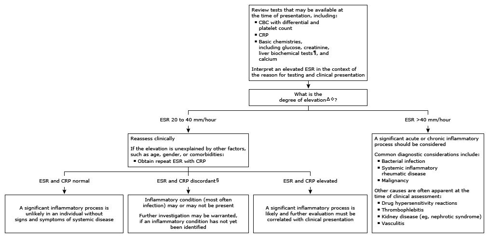

CBC: complete blood count; CRP: C-reactive protein; ESR: erythrocyte sedimentation rate.
* The ESR is a nonspecific, indirect measure of the inflammatory response. A commonly accepted reference range is 0 to 15 mm/hour in men and 0 to 20 mm/hour in women. The reference range increases with age, female sex, and obesity. Interpretation of a specific abnormal result should be based upon the reference range reported for that result.
¶ Liver biochemical tests include alanine aminotransferase, aspartate aminotransferase, and bilirubin.
Δ The magnitude of ESR elevation does not identify the etiology. The ESR may be elevated due to an acute and/or chronic inflammatory process, or due to factors unrelated to inflammation (eg, hematologic disorders or end-stage kidney disease). Early in a disease process, the ESR may be borderline elevated (or normal). In addition, a number of factors may spuriously result in an ESR that is less than expected in a patient with acute or chronic inflammation.
◊ A borderline normal ESR <20 mm/hour may be the individual's baseline level and may not require further evaluation if there are no worrisome clinical features.
§ Discrepant ESR and CRP levels may be due to differences in kinetics with CRP rising and decreasing more rapidly, in characteristics of the inflammatory response or immune disease, or to factors unrelated to inflammation. The cause of the discrepancy is often unknown.